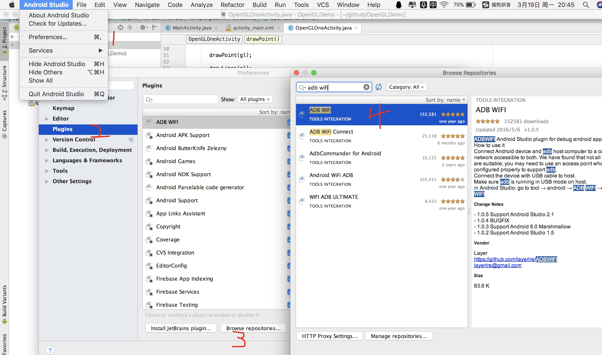
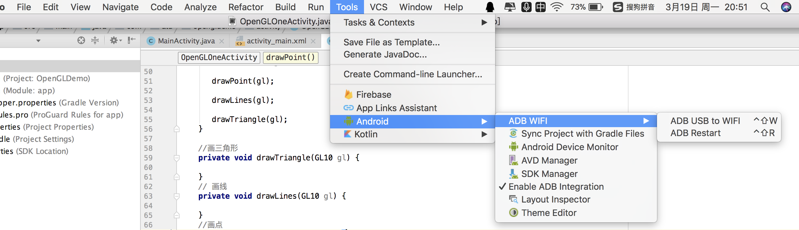

Android Studio WiFi 调试
由于最近在测试 Android 手机外接摄像头，这样在调试时就不能通过数据线连接的方式，改用 WiFi 调试。启用 WiFi 调试，主要有两个方法，一个是通过 Android Studio 的第三方插件 ADB WiFi ；另一个是通过终端窗口利用 IP 方式。两者都需要在同一局域网内（同一个 WiFi）。
1. ADB WiFi 使用
- Preference > Plugins > Browse repositories > ADB WiFi

安装插件，重启 Android Studio后，即可以在 Tools 看到 ADB USB to WiFi 。

- 刚开始还是需要数据线连接电脑。
- 运行 ADB Restart。
- 运行 ADB USB to WiFi 。
- 成功后，拔掉 USB ，之后就可以无线调试了。
2. 终端窗口设置
- 刚开始还是需要数据线连接电脑。
- 打开终端窗口，输入 adb connect 192.168.13.123 （手机 ip）
- 在终端窗口输入 adb tcpip 5555 （若输出 restarting in TCP mode port: 5555 表示ok）
- 断开手机与电脑的数据线
- 在终端窗口输入 adb connect 192.168.13.123:5555（若输出 connected to 192.168.13.123:5555 表示已经通过wifi连上手机adb了，至此就可以用wifi调试了）
手机 ip 获取
- 通过 设置 > WLAN > 点击 WiFi 名字查看具体信息
- 通过 adb shell > netcfg 查看